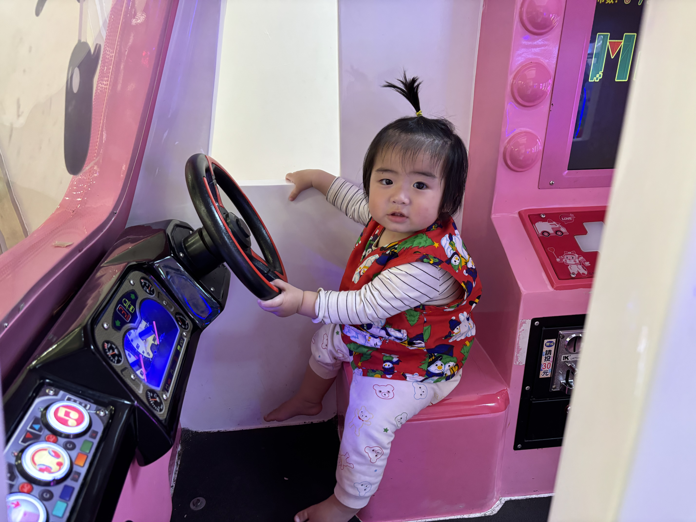
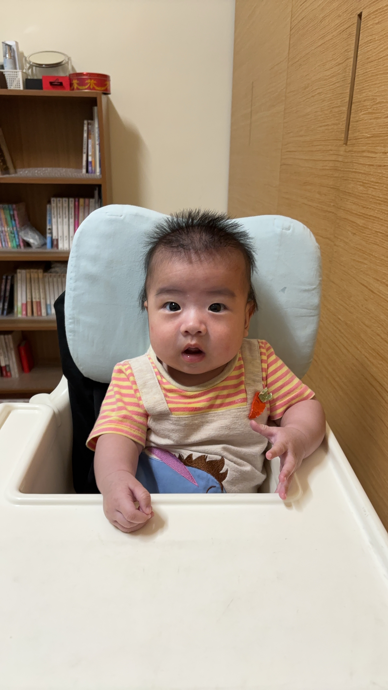

紀錄生活中的每一份感動與細節。

系列：城市攝影 | 2024年

我的旅程與理念
您好，我是 劉沛妤。自從第一次拿起相機以來，我就被光線和構圖的無限可能性所吸引。對我來說，攝影不僅是捕捉畫面，更是傳遞情感、凍結時間、以及與世界溝通的方式。
我的專長領域包括風景、人文和抽象攝影。我熱衷於探索未知的角落，並將那些肉眼可見卻難以言喻的美好，透過鏡頭轉化為永恆的視覺藝術。
我相信每一張照片背後都有一個故事，期待我的作品能為您帶來片刻的寧靜與啟發。
歡迎洽談合作、購買作品或交流攝影心得。